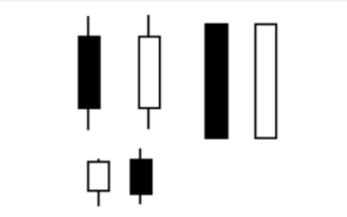
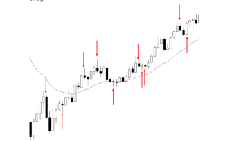

Metodologia Al Brooks
MD. professional trader!
"Sou um trader que utiliza Price Action e que levou anos para
aprender como ganhar dinheiro no mercado, por isso entendo bem o
difícil caminho que os traders percorrem até se tornarem
consistentes. Nos meus 30 anos de carreira produzi diversos
livros, artigos, videos, livros e palestras que ajudaram
milhares de traders pelo mundo a aprender a ganhar dinheiro na
bolsa como profissionais."
Barras/Candles:
O que é uma BARRA DE TENDÊNCIA?
- Corpos são proporcionalmente maiores do que as sombras (mais de 50% da barra).
- Houve superioridade de um dos lados.
- Desequilíbrio entre compra e venda.
- Muito deslocamento vertical de preço.
- É uma tendência em um tempo gráfico menor.
Barra de sinal deve ser analisada pelo contexto, nesse exemplo forte perna de alta anterior ao sinal.
Antes de aparecer uma barra de reversão na TL, ouve uma perna com pressão forte de compra, sem sinais de correção anterior, ou seja, não operar vendido no mínima da barra contra essa pressão de compra.
Barras de Reversão (RB). Quais são os requisitos mínimos?
Boas para entrar com ordens stops, rompendo 1 tick. Reverter algum coisa (uma média, uma mínima, etc) Em reversão para baixa: um fechamento abaixo do ponto médio; Em reversão para alta: um fechamento acima do ponto médio Melhores barras são as que tem corpos grandes (diferente do martelo, pois já mostra força na própria barra.